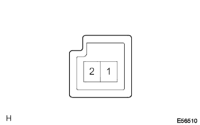
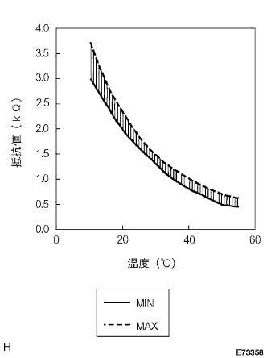

DTC FACE Sensor Circuit |
| Display code | Diagnostic content
| Inspection site |
|---|---|---|
| Face |
|
|

| Step 1 | Center Cluster Module Switch Single Inspection (TR, SG-RH) |
 |
Turn on the IG switch.
Use SST (Toyota Electrical Tester) to measure the voltage between the connector A18 (TR) of the center cruster module switch ← → A31 (SG-RH) terminal.
| Indoor temperature | Reference value |
|---|---|
| 25 ° C | 1.8-2.2V |
| 40 ° C | 1.2-1.6v |
|
| ||||
| NG | |
| Step 2 | Thermista ASSY (internal sensor) Single inspection |
Inner sensor resistance inspection
Separate the connector of the thermista asser (inner sensor).
|  |
Use SST (Toyota Electrical Tester) to measure the resistance value between 1 terminal ← → 2 terminals of the thermistor asser (inner sensor).
|  |
The sensor atmosphere temperature and resistance value at the time of inspection are measured and determined.
| Temperature (° C) | Standard value (kΩ) |
|---|---|
| 10 | 3.00-3.73 |
| 15 | 2.45-2.88 |
| 20 | 1.95-2.30 |
| twenty five | 1.60-1.80 |
| 30 | 1.28-1.47 |
| 35 | 1.00-1.22 |
| 40 | 0.80-1.00 |
| 45 | 0.65-0.85 |
| 50 | 0.50-0.70 |
| 55 | 0.44-0.60 |
| 60 | 0.36-0.50 |
|
| ||||
| OK | |
| Step 3 | Wire harness or connector inspection (Centacasta Modi Ursutsuchi-Thermista ASSY (inside sensor)) |
Preparation before inspection
Cut the connector of the center cruster module switch.
Use SST to short circuit the wire harness side connector terminal 1 ← → terminal 2 of the thermista asser (inner sensor).
 |
Conduction inspection
Use SST (Toyota Electrical Tester) to check the conversation between the wire harness side connector A18 (TR) terminal ← → A31 (SG-RH) terminals.
Short -circuit inspection
Use the SST (Toyota Electrical Tester) to check the conversation between the wire harness side connector A18 (TR) terminal of the center cruster module switch and the A31 (SG-RH) terminal ← → the conduct between body grounds.
|
| ||||
| OK | |
| Step 4 | Diag code reading |
Erase the sensor chaeck code.
Turn on the IG switch and read the diag code after 8.5 minutes or more.
|
| ||||
| NG | ||
| ||